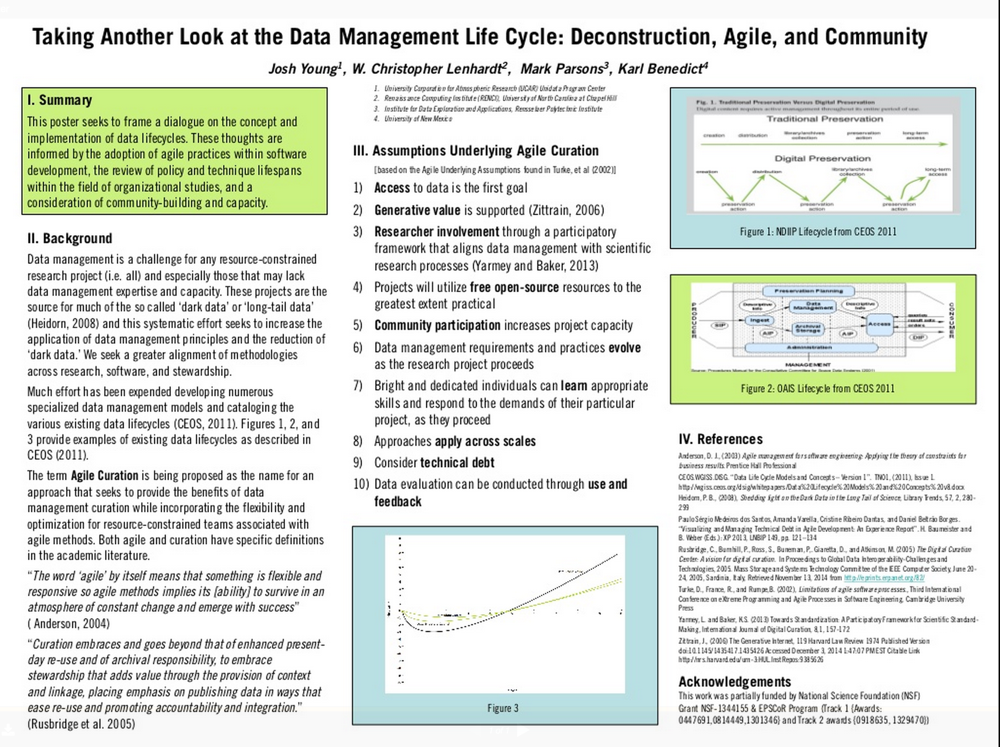

Technical Debt
The evolving technical debt conceptual model can be found at: https://github.com/karlbenedict/agilecuration

Introduction
Presentations on Agile Curation Case Studies and Examples of the Technical Debt Model
Examples
Discussion / Next Steps
BoF Results

Key Ideas Presented in the AGU Poster
Research data management and curation is
While agile development includes methods and practices, it also embodies a fundamentally different philosophical approach as embodied in the Manifesto for Agile Software Development
We are uncovering better ways of developing software by doing it and helping others do it. Through this work we have come to value:
Individuals and interactions over processes and tools
Working software over comprehensive documentation
Customer collaboration over contract negotiation
Responding to change over following a plan
That is, while there is value in the items on the right, we value the items on the left more. http://agilemanifesto.org/.
The evolving technical debt conceptual model can be found at: https://github.com/karlbenedict/agilecuration


Discussion / Next Steps
BoF Results
Anderson, D. J., (2003) Agile management for software engineering: Applying the theory of constraints for business results. Prentice Hall Professional
CEOS.WGISS.DISG. “Data Life Cycle Models and Concepts – Version 1”. TNO1, (2011), Issue 1. http://wgiss.ceos.org/dsig/whitepapers/Data%20Lifecycle%20Models%20and%20Concepts%20v8.docx
Heidorn, P. B., (2008), Shedding light on the Dark Data in the Long Tail of Science, Library Trends, 57, 2, 280- 299
Paulo Sérgio Medeiros dos Santos, Amanda Varella, Cristine Ribeiro Dantas, and Daniel Beltrão Borges. “Visualizing and Managing Technical Debt in Agile Development: An Experience Report”. H. Baumeister and B. Weber (Eds.): XP 2013, LNBIP 149, pp. 121–134
Rusbridge, C., Burnhill, P., Ross, S., Buneman, P,. Giaretta, D., and Atkinson, M. (2005) The Digital Curation Center: A vision for digital curation. In Proceedings to Global Data Interoperability-Challenges and Technologies, 2005. Mass Storage and Systems Technology Committee of the IEEE Computer Society, June 20- 24, 2005, Sardinia, Italy, Retrieved November 13, 2014 from http://eprints.erpanet.org/82/
Turke, D., France, R., and Rumpe,B. (2002), Limitations of agile software processes., Third International Conference on eXtreme Programming and Agile Processes in Software Engineering, Cambridge University Press
Yarmey, L. and Baker, K.S. (2013) Towards Standardization: A Participatory Framework for Scientific Standard- Making, International Journal of Digital Curation, 8,1, 157-172 Zittrain, J., (2006) The Generative Internet, 119 Harvard Law Review 1974 Published Version doi:10.1145/1435417.1435426 Accessed December 3, 2014 1:47:07 PM EST Citable Link http://nrs.harvard.edu/urn-3:HUL.InstRepos:9385626
This work was partially funded by National Science Foundation (NSF) Grant NSF-1344155 & EPSCoR Program (Track 1 {Awards: 0447691,0814449,1301346} and Track 2 awards {0918635, 1329470})